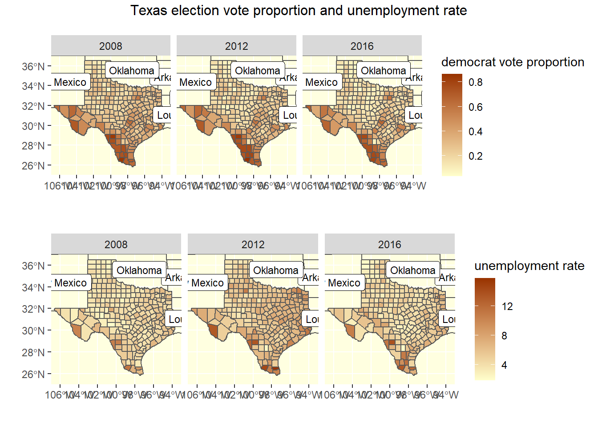
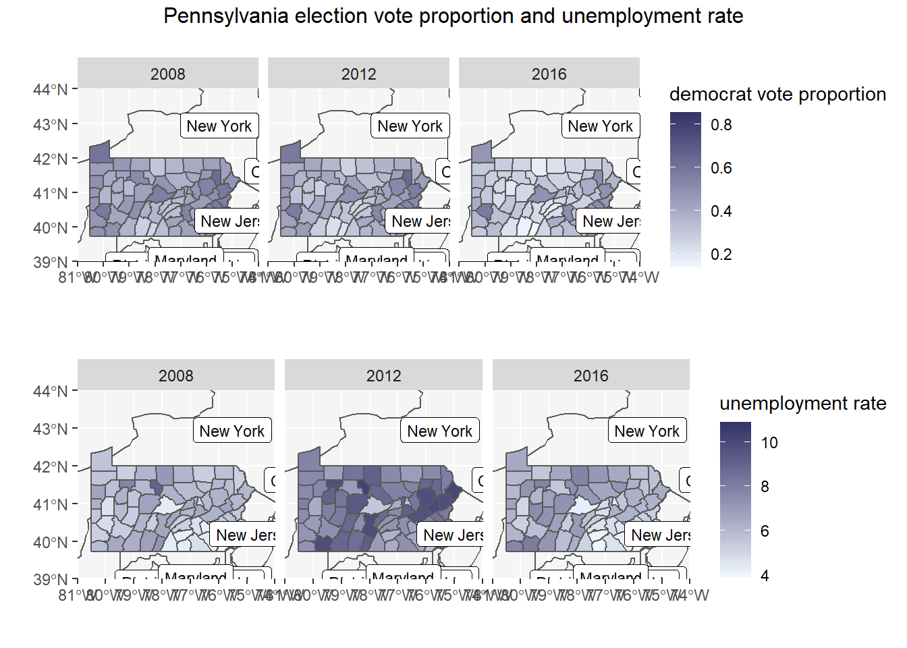
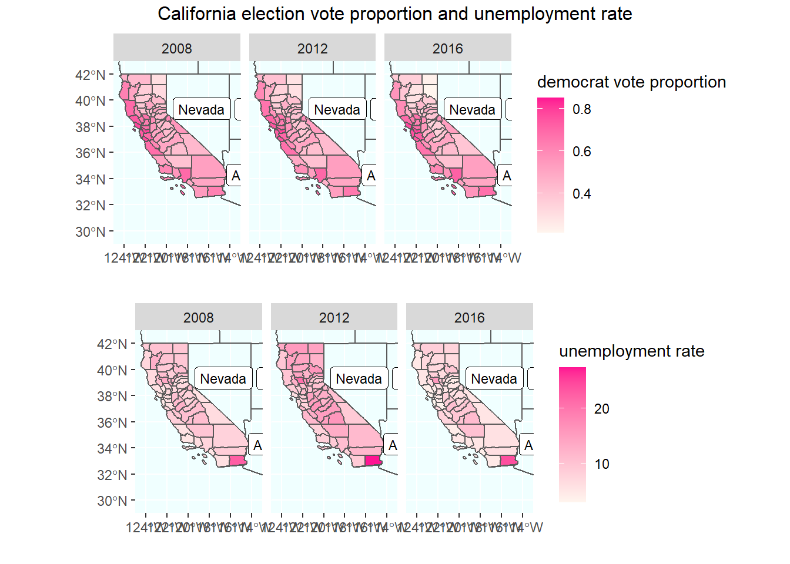

library(reticulate)
library(ggplot2)
library(tidyverse)
library(gridExtra)
library(readxl)
library(sf)
library(spData)
library(maps)import numpy as np
import pandas as pd
import recountypres=pd.read_csv('data/countypres_2000-2016.csv')
unemployment=pd.read_excel('data/Unemployment.xls', skiprows=7) # select rowscountypres=countypres[countypres['year'].isin([2008,2012,2016]) & countypres['party'].isin(['republican','democrat'])]
countypres['FIPS']=countypres['FIPS'].astype(str).apply(lambda x: re.sub('\.0','',x))def FIX_FIPS(x):
if len(x)==4:
return('0'+x)
else:
return x
def get_year(x):
return int(re.findall('\d+',x)[0])
def remove_suffix(x):
return re.sub('_\d+','',x)countypres['FIPS']=countypres['FIPS'].apply(FIX_FIPS)
countypres['vote_proportion']=countypres['candidatevotes']/countypres['totalvotes']
# unemployment data tidy
unemployment=unemployment.rename(columns={'FIPStxt':'FIPS'})
unemployment=unemployment.drop(columns=['Median_Household_Income_2018','Med_HH_Income_Percent_of_State_Total_2018','area_name','Rural_urban_continuum_code_2013','Urban_influence_code_2013','Metro_2013'])
unemployment=unemployment.melt(id_vars=['FIPS','Stabr'], var_name='key', value_name='value')
unemployment['year']=unemployment['key'].apply(get_year)
unemployment['key']=unemployment['key'].apply(remove_suffix)
unemployment['FIPS']=unemployment['FIPS'].astype(str).apply(FIX_FIPS)
unemployment=unemployment.pivot_table(index=['year','Stabr','FIPS'],columns='key',values='value')countypres## year state state_po ... totalvotes version vote_proportion
## 21815 2008 Alabama AL ... 23641 20191203 0.257730
## 21816 2008 Alabama AL ... 23641 20191203 0.736136
## 21818 2008 Alabama AL ... 81413 20191203 0.238119
## 21819 2008 Alabama AL ... 81413 20191203 0.752595
## 21821 2008 Alabama AL ... 11630 20191203 0.489854
## ... ... ... ... ... ... ... ...
## 50516 2016 Alaska AK ... 5639 20191203 0.249158
## 50518 2016 Alaska AK ... 4610 20191203 0.507158
## 50519 2016 Alaska AK ... 4610 20191203 0.298698
## 50521 2016 Alaska NaN ... 5056 20191203 0.054193
## 50522 2016 Alaska NaN ... 5056 20191203 0.007911
##
## [18948 rows x 12 columns]unemployment## key Civilian_labor_force Employed Unemployed Unemployment_rate
## year Stabr FIPS
## 2000 AK 02000 319511.0 299146.0 20365.0 6.4
## 02013 940.0 858.0 82.0 8.7
## 02016 2735.0 2592.0 143.0 5.2
## 02020 140602.0 133453.0 7149.0 5.1
## 02050 6401.0 5824.0 577.0 9.0
## ... ... ... ... ...
## 2019 WY 56037 21274.0 20446.0 828.0 3.9
## 56039 15575.0 15151.0 424.0 2.7
## 56041 9035.0 8682.0 353.0 3.9
## 56043 3941.0 3786.0 155.0 3.9
## 56045 3811.0 3701.0 110.0 2.9
##
## [65406 rows x 4 columns]countypres=read.csv('data/countypres_2000-2016.csv')
unemployment=read_xls('data/Unemployment.xls', skip = 5)
shape = st_read('data/tl_2019_us_county-1')## Reading layer `tl_2019_us_county' from data source `D:\503\portfolio\ANLY503_Portfolio\data\tl_2019_us_county-1' using driver `ESRI Shapefile'
## Simple feature collection with 3233 features and 17 fields
## geometry type: MULTIPOLYGON
## dimension: XY
## bbox: xmin: -179.2311 ymin: -14.60181 xmax: 179.8597 ymax: 71.43979
## geographic CRS: NAD83# countypres
countypres = countypres %>% group_by(year, FIPS) %>% filter(party=='republican'|party=='democrat') %>% filter(year %in% c('2008', '2012', '2016'))
countypres$FIPS = as.character(countypres$FIPS)
countypres$FIPS = ifelse(nchar(countypres$FIPS)==5, countypres$FIPS, paste('0', countypres$FIPS, sep = ''))
countypres$vote_proportion = countypres$candidatevotes/countypres$totalvotes
# unemploymen
unemployment = unemployment %>% rename(FIPS=FIPStxt) %>% select(-c('area_name','Rural_urban_continuum_code_2013','Urban_influence_code_2013', 'Metro_2013')) %>% gather(key = 'key', value = 'value', -FIPS, -Stabr)
unemployment$year = unemployment$key %>% str_extract(.,'\\d+')
unemployment$key = unemployment$key %>% str_extract(.,'\\D+') %>% str_remove(.,'_$')
unemployment = unemployment %>% spread(key, value) %>% filter(year %in% c('2008', '2012', '2016')) %>% select(-c('Med_HH_Income_Percent_of_State_Total', 'Median_Household_Income'))
# map data
states = st_as_sf(maps::map('state', plot = F, fill = T)) %>% cbind(st_coordinates(st_centroid(.))) %>% mutate(ID = str_to_title(ID))countypres## # A tibble: 18,948 x 12
## # Groups: year, FIPS [9,468]
## year state state_po county FIPS office candidate party candidatevotes
## <int> <chr> <chr> <chr> <chr> <chr> <chr> <chr> <int>
## 1 2008 Alab~ AL Autau~ 01001 Presi~ Barack O~ demo~ 6093
## 2 2008 Alab~ AL Autau~ 01001 Presi~ John McC~ repu~ 17403
## 3 2008 Alab~ AL Baldw~ 01003 Presi~ Barack O~ demo~ 19386
## 4 2008 Alab~ AL Baldw~ 01003 Presi~ John McC~ repu~ 61271
## 5 2008 Alab~ AL Barbo~ 01005 Presi~ Barack O~ demo~ 5697
## 6 2008 Alab~ AL Barbo~ 01005 Presi~ John McC~ repu~ 5866
## 7 2008 Alab~ AL Bibb 01007 Presi~ Barack O~ demo~ 2299
## 8 2008 Alab~ AL Bibb 01007 Presi~ John McC~ repu~ 6262
## 9 2008 Alab~ AL Blount 01009 Presi~ Barack O~ demo~ 3522
## 10 2008 Alab~ AL Blount 01009 Presi~ John McC~ repu~ 20389
## # ... with 18,938 more rows, and 3 more variables: totalvotes <int>,
## # version <int>, vote_proportion <dbl>unemployment## # A tibble: 9,825 x 7
## FIPS Stabr year Civilian_labor_force Employed Unemployed Unemployment_rate
## <chr> <chr> <chr> <dbl> <dbl> <dbl> <dbl>
## 1 00000 US 2008 153761298 144860522 8900776 5.79
## 2 00000 US 2012 155119209 142600412 12518797 8.07
## 3 00000 US 2016 158626135 150902618 7723517 4.87
## 4 01000 AL 2008 2176489 2053477 123012 5.7
## 5 01000 AL 2012 2176337 2003290 173047 8
## 6 01000 AL 2016 2182558 2055251 127307 5.8
## 7 01001 AL 2008 24687 23420 1267 5.1
## 8 01001 AL 2012 25740 23961 1779 6.9
## 9 01001 AL 2016 26031 24709 1322 5.1
## 10 01003 AL 2008 83223 79372 3851 4.6
## # ... with 9,815 more rowsstates## Simple feature collection with 49 features and 3 fields
## geometry type: MULTIPOLYGON
## dimension: XY
## bbox: xmin: -124.6813 ymin: 25.12993 xmax: -67.00742 ymax: 49.38323
## geographic CRS: WGS 84
## First 10 features:
## ID X Y geom
## 1 Alabama -86.83042 32.80316 MULTIPOLYGON (((-87.46201 3...
## 2 Arizona -111.66786 34.30060 MULTIPOLYGON (((-114.6374 3...
## 3 Arkansas -92.44013 34.90418 MULTIPOLYGON (((-94.05103 3...
## 4 California -119.60154 37.26901 MULTIPOLYGON (((-120.006 42...
## 5 Colorado -105.55251 38.99797 MULTIPOLYGON (((-102.0552 4...
## 6 Connecticut -72.72598 41.62566 MULTIPOLYGON (((-73.49902 4...
## 7 Delaware -75.51492 39.00558 MULTIPOLYGON (((-75.80231 3...
## 8 District Of Columbia -77.03410 38.91079 MULTIPOLYGON (((-77.13731 3...
## 9 Florida -82.49181 28.65743 MULTIPOLYGON (((-85.01548 3...
## 10 Georgia -83.45853 32.65165 MULTIPOLYGON (((-80.89018 3...county_pres=merge(shape, countypres, by.x='GEOID', by.y='FIPS')
county_unemployment=merge(shape, unemployment, by.x='GEOID', by.y='FIPS')
counties = st_as_sf(maps::map('county', plot = F, fill = T))propotion_vote=ggplot()+geom_sf(data=us_states, fill=NA)+
geom_sf(data=county_pres %>% filter(STATEFP=='48',party=='democrat'),aes(fill=vote_proportion))+
scale_fill_gradient(low = "#FFFFCC", high = "#993300")+
geom_label(data=states %>% filter(ID!='Texas'),aes(X, Y, label = ID), size = 3)+
facet_wrap(~year, ncol =3)+
coord_sf(xlim = c(-107, -93), ylim = c(25, 37), expand = F)+
labs(x = '', y = '', fill = 'democrat vote proportion')+
theme(panel.background = element_rect(fill = "#FFFFE0"))
unemployment_rate=ggplot()+geom_sf(data=us_states, fill=NA)+
geom_sf(data=county_unemployment %>% filter(STATEFP=='48'),aes(fill=Unemployment_rate))+
scale_fill_gradient(low = "#FFFFCC", high = "#993300")+
geom_label(data=states %>% filter(ID!='Texas'),aes(X, Y, label = ID), size = 3)+
facet_wrap(~year, ncol =3)+
coord_sf(xlim = c(-107, -93), ylim = c(25, 37), expand = F)+
labs(x = '', y = '', fill = 'unemployment rate')+
theme(panel.background = element_rect(fill = "#FFFFE0"))
grid.arrange(propotion_vote,unemployment_rate, nrow=2,ncol=1,top = 'Texas election vote proportion and unemployment rate')
propotion_vote=ggplot()+geom_sf(data=us_states, fill=NA)+
geom_sf(data=county_pres %>% filter(STATEFP=='42',party=='democrat'),aes(fill=vote_proportion))+
scale_fill_gradient(low = "#F0F8FF", high = "#333366")+
geom_label(data=states %>% filter(ID!='Pennsylvania'),aes(X, Y, label = ID), size = 3)+
facet_wrap(~year, ncol =3)+
coord_sf(xlim = c(-81, -74), ylim = c(39, 44), expand = F)+
labs(x = '', y = '', fill = 'democrat vote proportion')+
theme(panel.background = element_rect(fill = "#F5F5F5"))
unemployment_rate=ggplot()+geom_sf(data=us_states, fill=NA)+
geom_sf(data=county_unemployment %>% filter(STATEFP=='42'),aes(fill=Unemployment_rate))+
scale_fill_gradient(low = "#F0F8FF", high = "#333366")+
geom_label(data=states %>% filter(ID!='Pennsylvania'),aes(X, Y, label = ID), size = 3)+
facet_wrap(~year, ncol =3)+
coord_sf(xlim = c(-81, -74), ylim = c(39,44), expand = F)+
labs(x = '', y = '', fill = 'unemployment rate')+
theme(panel.background = element_rect(fill = "#F5F5F5"))
grid.arrange(propotion_vote,unemployment_rate, nrow=2,ncol=1,top = 'Pennsylvania election vote proportion and unemployment rate')
propotion_vote=ggplot()+geom_sf(data=us_states, fill=NA)+
geom_sf(data=county_pres %>% filter(STATEFP=='06',party=='democrat'),aes(fill=vote_proportion))+
scale_fill_gradient(low = "#FFF5EE", high = "#FF1493")+
geom_label(data=states %>% filter(ID!='California'),aes(X, Y, label = ID), size = 3)+
facet_wrap(~year, ncol =3)+
coord_sf(xlim = c(-125, -113), ylim = c(29, 43), expand = F)+
labs(x = '', y = '', fill = 'democrat vote proportion')+
theme(panel.background = element_rect(fill = "#F0FFFF"))
unemployment_rate=ggplot()+geom_sf(data=us_states, fill=NA)+
geom_sf(data=county_unemployment %>% filter(STATEFP=='06'),aes(fill=Unemployment_rate))+
scale_fill_gradient(low = "#FFF5EE", high = "#FF1493")+
geom_label(data=states %>% filter(ID!='California'),aes(X, Y, label = ID), size = 3)+
facet_wrap(~year, ncol =3)+
coord_sf(xlim = c(-125, -113), ylim = c(29, 43), expand = F)+
labs(x = '', y = '', fill = 'unemployment rate')+
theme(panel.background = element_rect(fill = "#F0FFFF"))
grid.arrange(propotion_vote,unemployment_rate, nrow=2,ncol=1,top = 'California election vote proportion and unemployment rate')